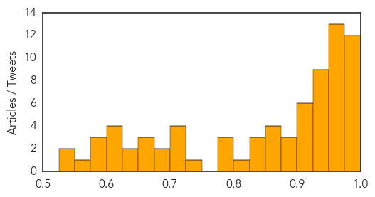

Meningitis
30-Day Web Trend
1 alerts, 0 warnings

30-Day Twitter Trend
0 alerts, 0 warnings

Article Locations

Article Confidences

Top Articles:
Top Tweets:
-
No tweets found for Feb 17, 2015
Measles
30-Day Web Trend
25 alerts, 3 warnings

30-Day Twitter Trend
5 alerts, 0 warnings

Article Locations

Article Confidences
Top Articles:
- 0.994
- Measles Cases Continue to Rise Across the United States
- 0.991
- Act quickly if measles suspected
- 0.991
- Measles outbreak: 5 questions and answers
- 0.990
- It's takes a team effort to fight disease outbreaks
- 0.989
- Measles Cases Continue to Rise Across the United States – WebMD
- 0.988
- Measles Continue to Spread, Reaching 141 Cases in 17 States
- 0.987
- Measles Continue to Spread, Reaching 141 Cases in 17 States
- 0.986
- Authorities still trying to determine how measles outbreak began at Disney parks
- 0.986
- 20 new measles cases appear nationwide
- 0.984
- Measles in Hawai‘i could be a problem, experts say
- 0.984
- No, We Can’t Blame Measles on Immigrants
- 0.982
- Spring break brings new risk for measles exposure
- 0.975
- 2nd case of measles confirmed in DC - Story
- 0.975
- Preventing Measles
- 0.973
- Measles outbreak remains a mystery
- 0.968
- Canberra on alert after ACT Health records first measles case of year
- 0.967
- Fears of measles crossing southern border into U.S. are unfounded
- 0.967
- Colo. measles vaccine rate among lowest in U.S.
- 0.963
- No measles cases reported in area, but vaccinations still encouraged
- 0.959
- Confirmed Illinois Measles Cases Climb to 14
- 0.957
- Simulation Brings Facts to Measles Outbreak and Vaccination Debate
- 0.957
- Isabel Wallace: Why this measles outbreak is new and worrying
- 0.956
- Villanova nursing professor advises parents on steps to take to prevent measles
- 0.955
- Milford health officials urge parents to immunize for measles
- 0.951
- Calif. Measles Outbreak Underscores Need for Vaccination
- 0.950
- More measles cases tied to Disneyland, Illinois day care
- 0.948
- Measles cases on North Olympic Peninsula hold steady at two as officials await test results -- Port Angeles Port Townsend Sequim Forks Jefferson County Clallam County Olympic Peninsula Daily NEWS
- 0.943
- More measles cases tied to Disneyland, Illinois day care
- 0.942
- Osceola Sentinel Tribune
- 0.942
- Marin health officials caution against 'measles parties'
- 0.936
- Fears of measles crossing southern border into U.S. are unfounded
- 0.933
- State warns protect yourself before travel
- 0.933
- Doctors answer questions about measles vaccine, symptoms
- 0.931
- Why can't my newborn be vaccinated? Infants and measles: What parents need to know
- 0.922
- The Disease Debate of 2015
- 0.919
- California advises travelers to the Philippines to ensure they are vaccinated
- 0.918
- California health officials urge measles vaccine before spring travel
- 0.917
- California health officials urge measles vaccine before spring travel
- 0.915
- Families count the cost of vaccine falsehoods
- 0.915
- The Vineyard Gazette - Martha's Vineyard News
- 0.897
- Salem Hospital sets protocol for measles response
- 0.889
- Local health unit issues measles warning
- 0.880
- Health officials: One out of 10 Oklahoma toddlers has not received measles vaccine
- 0.873
- 125 measles cases in U.S. linked to Disneyland
- 0.865
- Incomplete vaccination records leave schools guessing
- 0.861
- Infant who attended Palatine day care the 14th measles case in Illinois
- 0.852
- Ontario newborn linked to mom's viral measles rant gets the all-clear
- 0.848
- Vaccination rates in Central Florida below 95 percent
- 0.841
- Warning about US measles outbreak
- 0.834
- More US measles cases tied to Disneyland, Illinois day care
Showing top 50 articles...
Top Tweets:
-
No tweets found for Feb 17, 2015